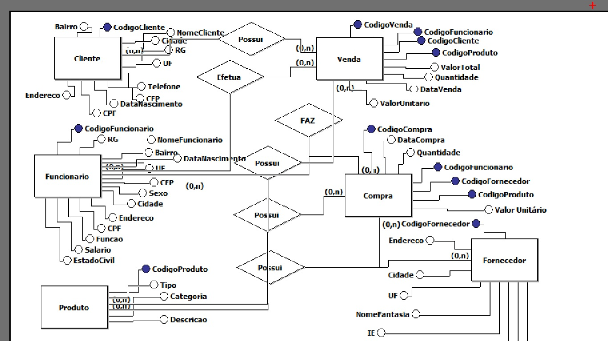

⠀⠀⠀⠀⠀Bancos de dados ou bases de dados são conjuntos de arquivos relacionados entre si com registros sobre pessoas, lugares ou coisas. São coleções organizadas de dados que se relacionam de forma a criar algum sentido (Informação) e dar mais eficiência durante uma pesquisa ou estudo cientifico. São de vital importância para empresas e há mais de duas décadas se tornaram a principal peça dos sistemas de informação e segurança. Normalmente existentes por vários anos sem alterações em sua estrutura sistemática.
⠀⠀⠀⠀⠀O mercado de trabalho para desenvolvedores é amplo e possibilita a escolha entre diversas áreas, como linguagens de programação para web, games, produtos (softwares), sites, DevOps e outros. No geral, o foco da atividade é a programação em si, mas também é possível se desenvolver na carreira em um cargo de gestão e liderança, voltado para o gerenciamento e desenvolvimento de escopo de projetos.
[O diagrama acima foi feito com base no IFSP-campus-Itapetininga]
